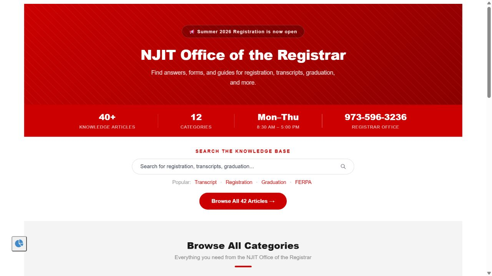

Custom portal home
I placed search, popular topics and quick links on the home page, along with office hours and contact details.
NJIT coursework · ServiceNow
For an NJIT course, I built a ServiceNow portal for common registrar questions. I organized 42 articles into 12 categories and revised the Banner registration guide so students could find what to do when registration stalled.

Design decisions
A student who knows the term “transcript” can type it into search. Someone trying to figure out what to do before graduation can browse Graduation & Degrees. I gave both routes a place on the home page.
Inside an article, I put preparation before instructions and kept the office contact details close to the steps where someone might need help.
Portal home page
I configured ServiceNow’s knowledge search widget and built reusable HTML and CSS blocks for office hours and contact information.
What I built
I placed search, popular topics and quick links on the home page, along with office hours and contact details.
I grouped articles by the task a student had in mind, from course registration and transcripts to FERPA and withdrawals.
Each guide opened with a short overview. Lists covered the steps in order, and tables let readers look up common errors.
I published the revised registration guide in ServiceNow and marked the previous version as outdated.
Example revision
I revised the guide through version 3.0. A student getting ready to register needed a checklist. A student already looking at a Banner error needed a way to look up that message and find the next step.
Recreated article excerptBased on my school-lab revision
This sample shows two parts of the guide. For current registration instructions, consult NJIT’s registrar.
Time conflictSelect a different section.
Hold on accountContact the office listed on the hold.
Contact
I’m looking for permanent, full-time work. I’m based in New Jersey and open to remote roles in the U.S., hybrid work, and relocation.